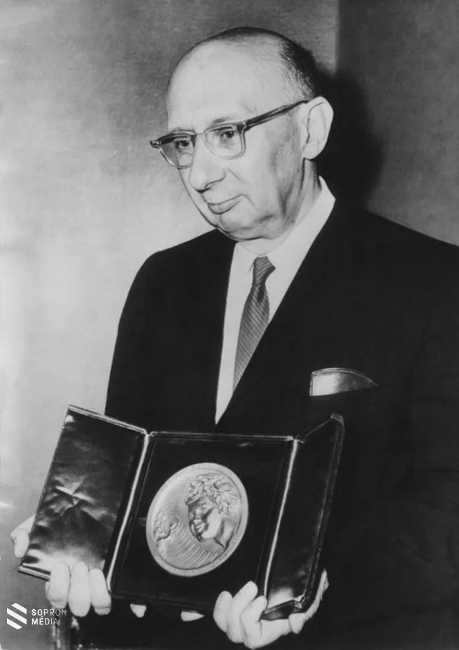
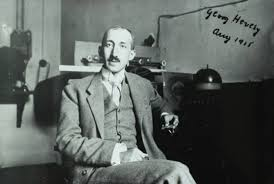
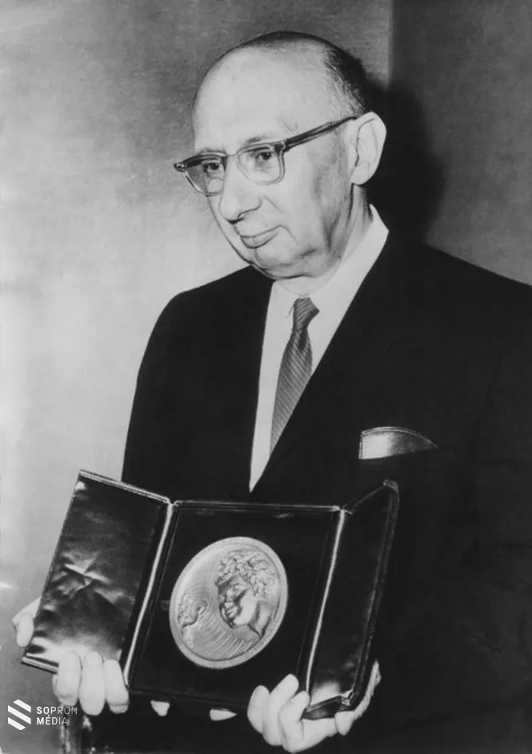
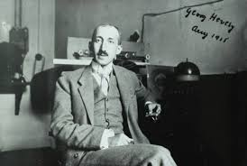

Magyar Nobel-díjasok
Magyarország eddig 13 Nobel-díjast adott a világnak. A díjazottak között találhatók tudósok, írók és békeaktivista is. A legtöbb díjat a fizika területén kapták magyarok, de van köztük kémikus, orvos és író is.
Nobel-díj
Magyar Nobel-díjasok listája
- Bárány Róbert (1914) - Fiziológia vagy orvostudomány
- Békésy György (1961) - Fiziológia vagy orvostudomány
- Gábor Dénes (1971) - Fizika
- Harsányi János (1994) - Közgazdaságtan
- Hevesy György (1943) - Kémia
- Kertész Imre (2002) - Irodalom
- Kissinger Henrik (1973) - Béke
- Lenard Fülöp (1905) - Fizika
- Oláh György (1994) - Kémia
- Polányi Mihály (1986) - Kémia
- Szent-Györgyi Albert (1937) - Fiziológia vagy orvostudomány
- Wigner Jenő (1963) - Fizika
- Zsigmondy Richárd (1925) - Kémia
 


